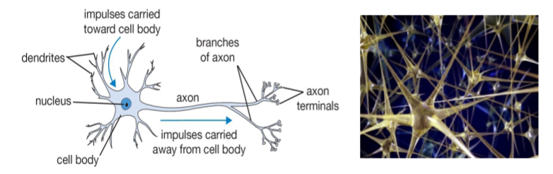
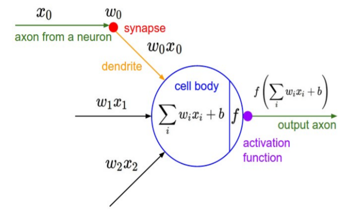
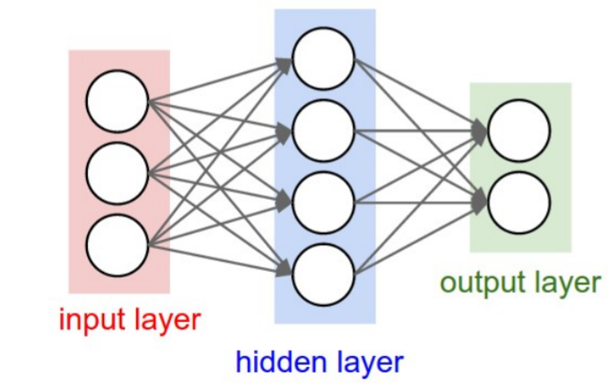
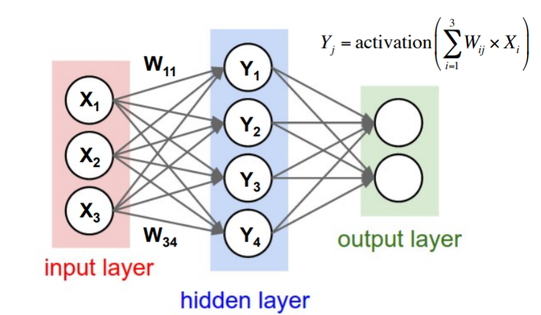

Aplicaciones de la matemática en informática
Ejemplos del Mundo Real
Fundamentos detrás del Reconocimiento de Voz utilizando Machine Learning
Presentación
Licenciatura en Informática
4to Año
Motivación
Para esto vamos a ver un concepto importante que nos va a permitir entender un poco más lo que significa un audio en términos de análisis de datos.
Números Complejos
Representación de objetos en un plano bidimensional
- Números complejos como herramientas
- Casos específicos
Análisis de frecuencias
- Generación de terrenos
- Análisis de sonido
- ...
Conceptos Necesarios
Un número complejo es un número de la forma $ a + bi $ donde:
-
$ a, b \in \mathbb{R} $
-
$ i $ es la solución a la ecuación $ x^2 = -1 $
En el número $a + bi$, $a$ es la parte real y $b$ es la parte imaginaria.
El sistema numérico complejo se puede definir como la extensión algebraica de los números reales ordinarios mediante un número imaginario $i$. Esto significa que los números complejos se pueden sumar, restar y multiplicar como polinomios en la variable $i$, con la regla $i^2 = -1$ impuesta.
Además, los números complejos también se pueden dividir por números complejos distintos de cero.
Geométricamente, los números complejos extienden el concepto de línea numérica unidimensional a plano complejo bidimensional.
En el plano complejo, el número $a + bi$ puede representarse como el punto $(a, b)$ de la siguiente forma:
Plano Complejo

Representación de objetos
Traslaciones y Rotaciones
Los números complejos pueden sumarse y multiplicarse.
Sean $a = x_1 + y_{1}i, b = x_2 + y_{2}i \in \mathbb{C}$ tales que:
- |$a$| $= r_a, arg(a) = \theta_a$
- |$b$| $= r_b, arg(b) = \theta_b$
Definimos el producto complejo de la siguiente forma:
\[\begin{aligned} ab &= r_{a}r_{b} \textbf{e}^{i(\theta_a + \theta_b)} \\ &= {r_{a}r_{b}}_{(\theta_a + \theta_b)} \end{aligned}\]
Ejemplo Específico
Queremos representar la posición de un objeto cuyo movimiento se muestra de la siguiente forma:

Podemos ver como se comporta el movimiento en el eje x en la siguiente imagen:

Además, observamos en el siguiente gráfico como es el comportamiento del mismo en función de funciones trigonométricas conocidas.

La misma se comporta de la siguiente forma:

Amplitud
Para definir la amplitud inicial de la función coseno simplemente multiplicamos la posición del objeto por un número que signifique la amplitud inicial del resorte, $A$.
Periodo
Sabemos que la función $cos$ recibe la variable $t$ como argumento en cada iteración. Luego, podemos evaluar como afectaría a la posición del objeto multiplicar ese tiempo $t$ por un valor real $\omega$.
Fase
Finalmente, determinamos cuán corrido está el dibujo de la función coseno en base a la fase $\phi$.
Juntando todas las definiciones planteadas anteriormente, resumimos la posición del objeto en función del tiempo de la siguiente forma:
- $x(t) = Acos(\omega t + \phi)$
- $y(t) = Asin(\omega t + \phi)$
Particularmente, si tomamos la amplitud $A$ como la distancia de la caja al centro del plano es decir, el módulo de la posición, y sea $\theta = \omega t + \phi$, el argumento de la posición a lo largo del tiempo, tenemos la posición en forma trigonométrica,
\[ r(t) = A (cos(\theta) + i sin(\theta)) \]
Análisis de Frecuencias
Generación de Terrenos
Análisis de audio
Dada una señal o fenómeno ondultorio de amplitud $ s(t) $ esta se pude escribir matemáticamente como la siguiente combinación lineal generalizada:
\[ s(t) = \int_{\mathbf{R}} A(v)e^{-2 \pi ivt} d \omega \]Resumen
Reconocimiento de voz
Machine Learning
Matemática para Machine Learning
- Estadística es el núcleo de todo esto.
- Cálculo nos dice como aprende y se optimizan nuestros modelos.
- Álgebra Lineal permite la ejecución de estos algoritmos en conjuntos de datos masivos.
- Probabilidad ayuda a predecir la probabilidad de que un evento ocurra.
Ejemplo
"The problem is to predict the price of an apartment in an up-and-coming neighborhood in NewYork City"
Apartment Prices in NY
| Price Per Square Foot | Total Price? |
|---|---|
| 85 | $534.760 |
| 67 | $535.717 |
| 71 | $833.333 |
| 18 | $728.377 |
| 99 | $899.945 |
| 69 | $760.564 |
Estadística
Colección de técnicas que permiten extraer información valiosa de un conjunto de datos. Es una herramienta para crear un entendimiento a partir de un conjunto de números.Inferencia Estadística
Es el proceso de crear una predicción sobre una población de datos basándose en una muestra más pequeña a partir de la cual se pueda inferir ciertos parámetros significativos para la predicción.Regresión Lineal
Regresión Lineal
Nos permite resumir la relación entre dos variables, una dependiente y otra independiente.Error Cuadrático Medio

Definición
\[ ECM = \frac{1}{N} \sum_{i=1}^{N} (Y - \hat{Y})^2 \]Y ahora que tenemos los datos, y sabemos como calcular el error de nuestra predicción, podemos construir un gráfico de la siguiente forma:
Cálculo
Disciplina matemática que permite el estudio del cambio, y del cual sale un algoritmo de optimización que utilizaremos para resolver este problema, Gradient DescentGradient Descent
Algoritmo de optimización iterativo de primer orden para encontrar el mínimo de una función.¡¡No confundir con Method of Steepest Descent!!
Ejemplo
Lo veremos en breve
Multivariate Regression
\[ Y_t = a_1 + b_2 X_{2t} + ... + b_{(n+1)} X_{(n+1)t} + e_t \]Algebra Lineal
Es la rama de la matemática que estudia espacios multivariados, las transformaciones lineales existentes entre ellos y cómo pueden representarse estas cuestiones en términos de matrices y espacios vectoriales.Pero, dónde entra Probabilidad en todo esto?
Logistic Regression
Regresión Lineal
Ejemplo
Gradient Descent
Visualización

Definición:
\[ Error_{(m, b)} = \frac{1}{N} \sum_{i=1}^{N} (y_i - (m x_i + b))^2 \]
def compute_error(b, m, points):
"""
y = mx + b
m is slope, b is y-intercept
"""
totalError = 0
for [x, y] in points:
totalError += (y - (m * x + b)) ** 2
return totalError / float(len(points))
\[ \frac{\partial}{\partial b} = \frac{2}{N} \sum_{i=1}^{N} -(y_i - (m x_i + b)) \]
def gradient_descent(points, b, m, learning_rate, num_iterations):
for _ in range(0, num_iterations):
[b, m] = step_gradient(b, m, array(points), learning_rate)
return [b, m]
def step_gradient(b, m, points, learning_rate):
b_gradient = 0
m_gradient = 0
N = float(len(points))
for [x, y] in points:
b_gradient += y - ((m * x) + b)
m_gradient += x * (y - ((m * x) + b))
new_b = b - (learning_rate * (-2/N) * b_gradient)
new_m = m - (learning_rate * (-2/N) * m_gradient)
return [new_b, new_m]
Ver Ejemplo
Ver Ejemplo
Resumen
Qué tenemos hasta ahora?
- Entendemos qué es un audio en términos de información.
- Tenemos herramientas que nos permiten realizar un análisis del audio y extraer información interesante.
- Conocemos cómo aprende una máquina en términos de optimización.
- Sabemos cómo suministrarle información a un modelo para permitirle aprender.
Y ahora qué?
Redes Neuronales
¿Cómo funciona el cerebro?
¿Cómo funciona el cerebro?
-
Neurona: Unidad computacional básica a nivel cerebral
- 86.000 millones de neuronas
- Conectadas a través de sinapsis: \[ 10^{14} – 10^{15} \]
- Reciben señales de entrada desde las dendritas
- Producen señales de salida a través del axón
- Interactúa con dendritas de otras neuronas a través de pesos sinápticos
- Aprendizaje: Adaptación de pesos
Redes Neuronales Artificiales
Conjuntos de sumas con pesos
Cada sinapsis posee un peso utilizado para la activación de la neurona.
Partiendo de este concepto básico aparecen distintos tipos de NN.
- Redes Neuronales Profundas - DNN
- Redes Neuronales de Convolución - CNN
- etc
Redes Neuronales Profundas
Deep Learning
Redes Neuronales LSTM
Redes Neuronales Recurrentes
Redes Neuronales Recurrentes
Una red neuronal recurrente, RNN, es una clase de red neuronal artificial donde las conexiones entre los nodos forman un gráfico dirigido a lo largo de una secuencia. Esto le permite exhibir un comportamiento dinámico temporal para una secuencia de tiempo.Long short-term memory
Las unidades de memoria a largo plazo, (LSTM), son unidades de una RNN. Un RNN compuesto de unidades LSTM a menudo se llama una red LSTM.
import tensorflow as tf
import tflearn
import speech_data
learning_rate = 0.0001
training_iters = 300000 # steps
batch_size = 64
width = 20 # mfcc features
height = 80 # (max) length of utterance
classes = 10 # digits
batch = word_batch = speech_data.mfcc_batch_generator(batch_size)
# Network building
net = tflearn.input_data([None, width, height])
net = tflearn.lstm(net, 128*4, dropout=0.5)
net = tflearn.fully_connected(net, classes, activation='softmax')
net = tflearn.regression(net,
optimizer='adam',
learning_rate=learning_rate,
loss='categorical_crossentropy')
model = tflearn.DNN(net, tensorboard_verbose=0)
## add this "fix" for tensorflow version errors
for x in tf.get_collection(tf.GraphKeys.TRAINABLE_VARIABLES):
tf.add_to_collection(tf.GraphKeys.VARIABLES, x )
# Training
while --training_iters > 0:
trainX, trainY = next(batch)
testX, testY = next(batch) # todo: proper ;)
model.fit(trainX, trainY,
n_epoch=10,
validation_set=(testX, testY),
show_metric=True,
batch_size=batch_size)
model.save("tflearn.lstm.model")
_y = model.predict(next(batch)[0]) # << add your own voice here
print (_y)